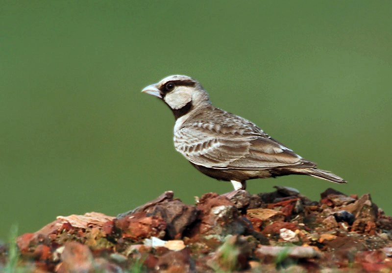

दिवरीAshy-crowned Sparrow-Lark
Eremopterix griseus · Alaudidae · BRD-0197

- Scientific name वैज्ञानिक नाम
- Eremopterix griseus (Scopoli, 1786)
- Family कुल
- Alaudidae
- Hindi हिंदी
- दिवरी
- Local names स्थानीय नाम
- diwri, divri, ashy crowned sparrow lark, sparrow lark
- Status here यहाँ की स्थिति
- native
- Movement आवागमन
- Resident, here all year
- Known from कहाँ दर्ज
- Others have published records from the Basti–Ayodhya districts बस्ती–अयोध्या के ज़िलों से दूसरों के प्रकाशित अभिलेख
- IUCN IUCN
- LC
- Review समीक्षा
- audited and independently read
When to look कब देखें
Present all year. साल भर मौजूद।
Tell it apart from इनसे अलग पहचानें
दिवरी / Ashy-crowned Sparrow-Lark
Eremopterix griseus (Scopoli, 1786) — Alaudidae
दिवरी — यह छोटी, मस्त चिड़िया पूरे साल खुली घास और खेतों में दिखती है। इसका हल्का भूरा रंग और काली और सफेद चेहरे का पैटर्न इसे तुरंत पहचान देते हैं। झुंड में रहती है। जमीन पर बैठकर गाती है और जमीन पर ही घोंसला बनाती है।
Quick Identification त्वरित पहचान
| Feature | Description |
|---|---|
| Size | Small lark; 12–13 cm long |
| Plumage (male) | Ashy-grey crown; black and white facial pattern; buff-brown back |
| Plumage (female) | Similar to male but duller; facial markings less distinct |
| Underparts | Whitish to pale buff |
| Behaviour | Gregarious; runs on ground; flies with whirring wings |
| Habitat | Open grasslands, stubble fields, waste ground |
Field tip: A small, dumpy ground-dwelling lark with distinctive facial patterning. Always in flocks on the ground in open habitats. Males show clear grey crown and black-and-white face; females are duller. Runs rapidly on the ground and takes short, low flights with whirring wings between patches.
हिंदी — कैसे पहचानें:
छोटा, खुले मैदान का पक्षी।
झुंड में रहता है।
जमीन पर चलता है।
पेट सफेद, सिर राख रंग का।
Morphology आकारिकी
Biometrics:
| Measurement | Range |
|---|---|
| Total length | 120–130 mm |
| Wing (flattened chord) | 70–80 mm |
| Tail | 45–55 mm |
| Bill | 10–12 mm |
| Tarsus | 18–20 mm |
Size: 12–13 cm long; weighs 18–22 g. Compact, dumpy lark.
Plumage (male): Crown and nape ashy-grey. Face with distinctive black eye-line and cheek-patch; whitish supercilium (eyebrow) and throat. Back buff-brown with dark streaking. Rump pale. Tail dark. Underparts whitish to buff. Small black patch on shoulder.
Plumage (female): Similar to male but duller and less contrasting. Crown brownish-grey. Facial markings less distinct. Shoulder patch duller.
Bill: Small, pale below and dark above; slightly curved.
Legs and feet: Pale; long-toed; adapted for running on ground.
Sexes: Males brighter with stronger facial pattern; females duller.
Juveniles: Resemble females; streaked crown and breast.
Vocalisations. Call repertoire:
- Song: A clear, pleasant, warbled song given from the ground or from a low perch; often in flight.
- Contact calls: Soft, chirping notes; also drawn-out "seed" calls.
- Alarm: Sharp twittering and chattering.
हिंदी: "सीड-सीड" जैसी आवाज़। गाना आकर्षक है।
Behaviour & Ecology व्यवहार और पारिस्थितिकी
Gregarious: Highly social; lives in flocks year-round. Flocks range from 5–30+ birds.
Foraging: Walks and runs rapidly on the ground, pecking seeds and insects. Feeds on:
- Grass and weed seeds
- Small insects and invertebrates
- Crop seeds from stubble fields
Perching: Often perches on grass tufts or low bushes, rarely on trees.
Flight: Quick, low flights with rapid wing beats. Whirring wing sound characteristic. Flocks fly together.
Nesting: Monogamous; breeds in small loose colonies.
Daily routine: Active throughout the day. Most vocal at dawn and dusk.
हिंदी: झुंड में रहता है। जमीन पर दाने खोजता है। तेजी से दौड़ता है।
Life Cycle / Phenology जीवन चक्र
Breeding season: June–August in eastern UP (varies with monsoon onset).
Nest: Simple scrape on ground in short grass or bare ground; lined with grass and feathers.
Clutch: 3–4 eggs; pale greenish with dark markings.
Incubation: About 12 days; female incubates.
Fledging: Chicks fledge in 9–10 days; both parents feed young.
Flocking: Post-breeding, birds gather into larger flocks; remains social year-round.
Moult: Complete post-breeding moult; July–September.
हिंदी: गर्मी में घोंसला बनाता है। जमीन पर घोंसला बनाता है।
Host Plants or Prey आहार
| Food Type | Examples | Feeding Behaviour |
|---|---|---|
| Seeds | Grass seeds, weed seeds, crop seeds | Peck from ground and low vegetation |
| Small insects | Ants, small beetles, termites, grasshoppers | Pick from ground and vegetation |
| Occasionally leaves and buds | Young vegetation | Browse on plants |
हिंदी: दाने और कीड़े खाता है। खेतों में दाने चुनता है।
Predators / Natural Enemies शत्रु
- Avian predators: Harriers, other raptors, shrikes
- Mammalian predators: Snakes, jackals, domestic cats
- Nest predators: Snakes, corvids
- Parasites: Avian parasites, mites
हिंदी: बाज़ और शिकारी चिड़ियाँ इसका शिकार करती हैं।
Agricultural / Human Relevance कृषि प्रासंगिकता
Protected status: Wildlife Protection Act 1972, Schedule IV (as member of Alaudidae).
Agricultural role: Feeds on weed seeds (beneficial); also eats crop seeds from stubble, causing minor damage. Overall, pest control of insects outweighs seed predation.
Cultural relevance: Known to farmers and villagers in dry regions; associated with fallow and harvest season.
Ecological value: Seed dispersal; food for raptors; indicator of grassland habitat.
हिंदी: विधि अधिनियम 1972 के अंतर्गत संरक्षित है।
Expected Locally स्थानीय रूप से अपेक्षित
Not a field record. Written from published accounts for eastern Uttar Pradesh. No confirmed local sighting yet — if you have seen it, that is what the atlas needs.
अभी तक स्थानीय पुष्टि नहीं। यह विवरण प्रकाशित स्रोतों से है, किसी अवलोकन से नहीं।
This species is NOT a field record. The distribution below is based on published sources describing where Ashy-crowned Sparrow-Lark should be looked for in the Basti–Ayodhya region.
Year-round presence: GBIF holds published records from the wider Awadh–Purvanchal plain. Expected resident in eastern UP in open grasslands, stubble fields, and waste ground with low vegetation. Most vocal and visible during breeding season (June–August).
Where to look: Open, dry grasslands; fallow fields; stubble after harvest; areas with sparse, short vegetation. Look for flocks on the ground.
Seasonality: Year-round; numbers vary with water availability and vegetation condition.
Detection: Easy to locate when calling from ground or low perch. Highly gregarious; look for flocks on open ground.
What a first record would be: A dated photograph showing multiple birds (note the distinctive facial pattern), with location GPS coordinates and date, submitted through the About page of this atlas.
हिंदी: खुले मैदानों में साल भर दिखता है। झुंड में देखा जाता है।
Distribution वितरण
Global range: Indian subcontinent, Iran, and parts of Central Asia. Resident or partially migratory.
In India: Widespread in dry regions of peninsular India and northern plains.
In Uttar Pradesh: Resident throughout the state in suitable dry habitats.
In Basti district / eastern UP: Expected in dry grasslands and fallow fields; presence to be confirmed through field surveys.
Research Questions शोध प्रश्न
- What is the population dynamics of Ashy-crowned Sparrow-Lark flocks across seasons in eastern UP?
- How does habitat type (grassland composition, plant species, vegetation height) affect flock density?
- What is the breeding success and clutch size variation in relation to monsoon onset and rainfall?
- पूर्वी उत्तर प्रदेश में इसके झुंड का आकार अलग-अलग मौसमों में कितना बदलता है?
- क्या अलग-अलग लिंग के झुंडों में बदलाव आता है, विशेषतः प्रजनन ऋतु में? (Equipment-free: observe and count flocks at different times of year.)
- How does agricultural practice (crop rotation, grazing intensity) affect its habitat availability?
Similar Species मिलती-जुलती प्रजातियाँ
| Species | Key Difference | Hindi | Field Rule | |
|---|---|---|---|---|
| [[sand_lark\ | Sand Lark]] (Calandrella raytal) | Larger; more streaked plumage; different facial pattern; pale supercilium | बालू तीतर | Sand Lark is larger and lacks the distinct black facial patch. Ashy-crowned is smaller and dumpy with clearer facial markings. |
| [[crested_lark\ | Crested Lark]] (Galerida cristata) | Much larger; prominent crest; different habitat (less open) | चंडूल | Crested Lark is much larger and has a conspicuous crest. Ashy-crowned is small and dumpy with no crest. |
| Bengal Bushlark (Mirafra assamica) | Larger; stouter; less gregarious; different voice | नई बुलबुल | Bushlark is larger and more rufous; less social than Ashy-crowned. |
Field rule: A small, dumpy lark, always in flocks on open ground. Males show distinctive ashy crown and black-and-white facial pattern. Runs on ground; flies with whirring wings. Highly gregarious; easily identified by behaviour and flock association.
Taxonomy & Classification वर्गीकरण
Original description. Described by Scopoli in 1786. Alauda grisea Scopoli, 1786. Type locality: Goa, India.
Subspecies. Two subspecies recognised:
- E. g. griseus (Scopoli, 1786) — peninsula and eastern India
- E. g. eremicola (Franklin, 1831) — northwestern India and Central Asia
The eastern UP populations are E. g. griseus.
Family and order placement. Order Passeriformes; family Alaudidae (larks). Genus Eremopterix comprises small ground-dwelling larks of open habitats in Asia and Africa.
Phylogenetic notes. Eremopterix is an African and Asian genus adapted to open grasslands. E. griseus is the Asian representative and is closely related to African species.
IUCN status rationale. Assessed as Least Concern (LC) globally. Population is stable and widespread. Adaptable to human-modified grasslands. Protected under the Wildlife Protection Act 1972 in India.
हिंदी: भारत में साधारण है। कानून से सुरक्षित है।
Photo Gallery फोटो गैलरी
No photos yet — add field photos to media/species/ashy_crowned_sparrow_lark/ and run node scripts/sync_photos.js.
Wanted photos:
- Flock on open ground
- Male showing ashy crown and facial pattern
- Female for comparison
- Running behaviour on grass
- In flight showing wing pattern
- Singing from low perch or ground
References संदर्भ
- Scopoli, J. A. (1786). Deliciae Florae et Faunae Insubricae. Pars Prima. Galee, Ticini. Type locality: Goa.
- Ali, S. & Ripley, S. D. (1972). Handbook of the Birds of India and Pakistan. Vol. 5 (Waxwings to Whydahs). Oxford University Press, Delhi. Pp. 98–100.
- Grimmett, R., Inskipp, C. & Inskipp, T. (2011). Birds of the Indian Subcontinent (2nd edn). Oxford University Press, Delhi. P. 247.
- Praveen, J., Jayapal, R. & Pittie, A. (2016). A checklist of the birds of India. Indian Birds 11 (5–6): 113–172.
- GBIF Occurrence Data — Eremopterix griseus, India.
- IUCN Red List (2023). Eremopterix griseus — BirdLife International assessment. IUCN, Cambridge. Status: Least Concern.
Source file: species/fauna/birds/ashy_crowned_sparrow_lark.md